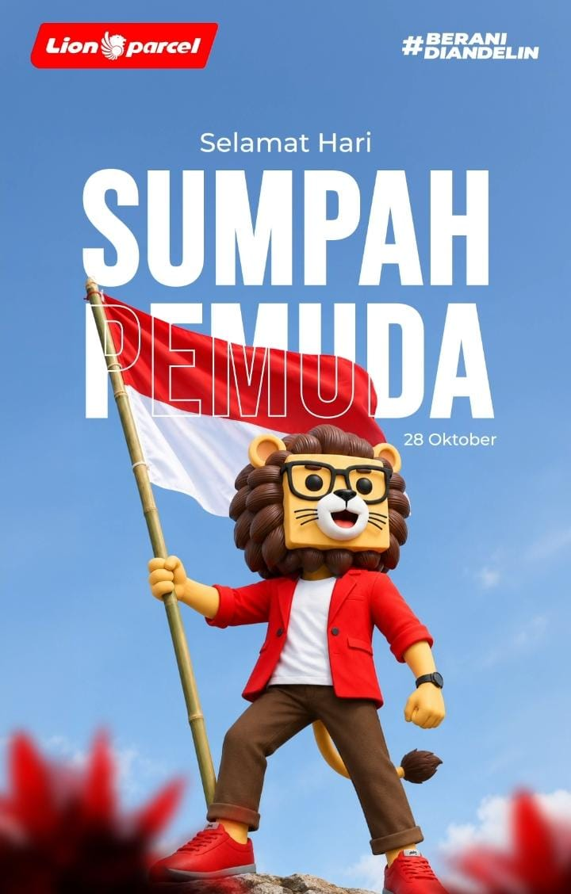

Sejarah Sumpah Pemuda 28 Oktober 1928: Penggerak Kebangkitan Bangsa Indonesia

Setiap tanggal 28 Oktober, bangsa Indonesia memperingati Hari Sumpah Pemuda. Peristiwa ini merupakan salah satu tonggak sejarah terpenting dalam perjuangan kemerdekaan Indonesia. Melalui ikrar Sumpah Pemuda, para pemuda dari pelbagai suku, agama, dan daerah menyatukan tekad untuk mengikatkan diri dalam satu bangsa, satu tanah air, dan satu bahasa.
Bagi adik-adik sekolah yang sedang mempelajari materi sejarah, artikel ini menyajikan rincian lengkap mengenai latar belakang, jalannya Kongres Pemuda, teks ikrar, hingga nama-nama tokoh penting di balik lahirnya Sumpah Pemuda.
1. Latar Belakang Lahirnya Sumpah Pemuda
Pada awal abad ke-20, pergerakan perjuangan di Indonesia masih bersifat kedaerahan (kedaerahan/kesukuan). Organisasi pemuda bermunculan berdasarkan wilayah asalnya masing-masing, seperti Jong Java (Pemuda Jawa), Jong Sumatranen Bond (Pemuda Sumatra), Jong Ambon, Jong Celebes (Pemuda Sulawesi), dan lain-lain.
Namun, para pemuda menyadari bahwa perjuangan kedaerahan sangat mudah dipatahkan oleh pemerintah kolonial Belanda. Diperlukan rasa persatuan nasional agar bangsa Indonesia dapat bangkit bersama mencapai kemerdekaan. Kesadaran inilah yang mendorong terselenggaranya serangkaian Kongres Pemuda.
2. Perjalanan Kongres Pemuda I dan II
A. Kongres Pemuda I (30 April – 2 Mei 1926)
Kongres Pemuda I dilaksanakan di Batavia (Jakarta) yang dipimpin oleh M. Tabrani. Tujuan utamanya adalah mempererat hubungan antar-organisasi pemuda serta menanamkan benih persatuan nasional. Meskipun belum melahirkan ikrar resmi, kongres pertama ini berhasil meletakkan dasar pemikiran pentingnya bahasa persatuan.
B. Kongres Pemuda II (27 – 28 Oktober 1928)
Kongres Pemuda II digagas oleh PPPI (Perhimpunan Pelajar-Pelajar Indonesia) dan dilaksanakan di tiga gedung berbeda di Jakarta selama dua hari:
- Rapat Pertama (Sabtu, 27 Oktober 1928): Dilaksanakan di Gedung Katholieke Jongenlingen Bond (KJB), Lapangan Banteng. Pembahasan berfokus pada pentingnya persatuan bagi perjuangan bangsa.
- Rapat Kedua (Minggu pagi, 28 Oktober 1928): Dilaksanakan di Gedung Oost-Java Bioscoop, membahas isu pendidikan dan kebudayaan bagi generasi muda.
- Rapat Ketiga (Minggu malam, 28 Oktober 1928): Dilaksanakan di Gedung Indonesische Clubhuis (Jl. Kramat Raya 106). Di sesi inilah ikrar Sumpah Pemuda dibacakan dan diperdengarkan untuk pertama kalinya lagu nasional Indonesia Raya karya W.R. Soepratman dengan alunan biola.
3. Isi Teks Ikrar Sumpah Pemuda
Rumusan ikrar ditulis langsung oleh Mohammad Yamin dan dibacakan secara khidmat di hadapan seluruh peserta kongres:
PERTAMA:
"Kami poetra dan poetri Indonesia, mengakoe beralat darah jang satoe, tanah Indonesia."
KEDUA:
"Kami poetra dan poetri Indonesia mengakoe berbangsa jang satoe, bangsa Indonesia."
KETIGA:
"Kami poetra dan poetri Indonesia mendjoendjoeng bahasa persatoean, bahasa Indonesia."
Kirim Tugas, Buku Sekolah & Paket Cepat ke Seluruh Nusantara!
Sama seperti semangat persatuan Sumpah Pemuda yang menghubungkan pulau-pulau di Indonesia, Lion Parcel Bandung POS101 Rancaekek hadir menghubungkan kiriman barang Anda ke seluruh pelosok Nusantara hingga mancanegara dengan cepat dan hemat!
Kirim buku pelajaran, sampel produk usaha, baju, hingga paket keluarga kini gratis penjemputan (Free Pickup) untuk area Rancaekek, Cicalengka, dan sekitarnya.
💬 Chat WhatsApp Agen POS1014. Tokoh-Tokoh Penting Sumpah Pemuda
Beberapa nama penting yang berperan besar dalam suksesnya peristiwa bersejarah ini antara lain:
- Sugondo Djojopuspito: Ketua Kongres Pemuda II (dari PPPI).
- R.M. Djoko Marsaid: Wakil Ketua Kongres Pemuda II (dari Jong Java).
- Mohammad Yamin: Sekretaris Kongres sekaligus penyusun rumusan teks Sumpah Pemuda (dari Jong Sumatranen Bond).
- Amir Sjarifuddin: Bendahara Kongres (dari Jong Bataks Bond).
- Wage Rudolf (W.R.) Soepratman: Pencipta lagu kebangsaan Indonesia Raya.
- Sie Kong Lian: Pemilik rumah di Jalan Kramat Raya 106 yang bersedia tempatnya dijadikan museum/lokasi pembacaan Sumpah Pemuda.
5. Makna dan Nilai Sumpah Pemuda Bagi Generasi Muda
Peristiwa Sumpah Pemuda mengajarkan banyak nilai berharga yang perlu diterapkan oleh para siswa di kehidupan sehari-hari:
- Nilai Persatuan: Menghargai perbedaan suku, agama, dan budaya di lingkungan sekolah maupun tempat tinggal.
- Cinta Tanah Air: Menggunakan bahasa Indonesia yang baik dan benar serta bangga terhadap produk dalam negeri.
- Semangat Gotong Royong: Bekerja sama mencapai tujuan bersama tanpa membeda-bedakan latar belakang.
📍 Lokasi Lion Parcel Bandung POS101 Nanjungmekar
Jl. Raya Barat Cicalengka RT 1 RW 1, Nanjung Mekar, Rancaekek, Kabupaten Bandung, Jawa Barat.
Kesimpulan
Sumpah Pemuda 28 Oktober 1928 bukti nyata bahwa keberagaman bangsa Indonesia dapat dipersatukan dengan semangat kebangsaan. Semoga materi sejarah ini bermanfaat untuk menambah wawasan serta tugas sekolah adik-adik sekalian!
Diterbitkan oleh: Lion Parcel Bandung POS101 Nanjungmekar Rancaekek
Jam Operasional: Senin–Minggu, 08.00–20.00 WIB
Alamat: Jl. Raya Barat Cicalengka RT 1 RW 1, Nanjung Mekar, Rancaekek, Kabupaten Bandung
WhatsApp: 0851-8309-0486